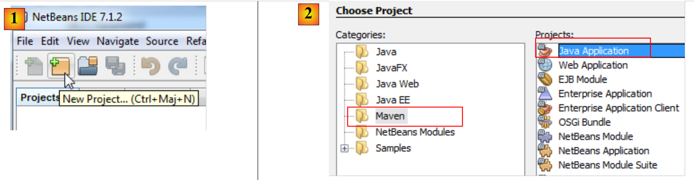
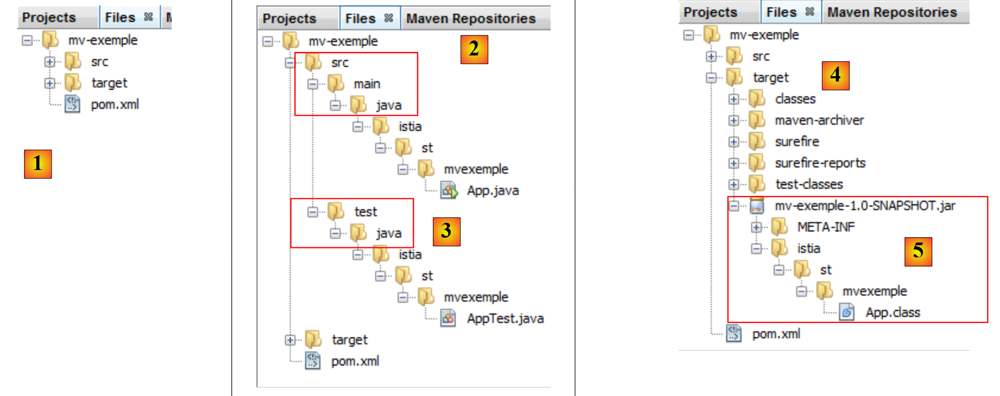

3. Herramientas utilizadas en este documento
Los ejemplos de este documento se han probado con las siguientes herramientas:
- NetBeans, versiones 6.8 a 7.1.2. La instalación de NetBeans se describe en [ref3], en la sección 1.3.1.
- WampServer versión 2.2. La instalación de WampServer se describe en [ref3], en la sección 1.3.3;
- Maven está integrado en NetBeans. A continuación describiremos esta herramienta.
3.1. Maven
3.1.1. Introducción
Maven está disponible en la URL [http://maven.apache.org/index.html ]. Según sus creadores:
El objetivo principal de Maven es permitir que un desarrollador comprenda el estado completo de un proyecto de desarrollo en el menor tiempo posible. Para lograr este objetivo, hay varias áreas clave que aborda Maven:
- Facilitar el proceso de compilación
- Proporcionar un sistema de compilación uniforme
- Proporcionar información de calidad sobre el proyecto
- Proporcionar directrices sobre las mejores prácticas en el desarrollo
- Permitir una migración fluida a nuevas funciones
Maven está integrado en NetBeans, y lo utilizaremos solo para una de sus funciones: gestionar las bibliotecas de un proyecto. Estas consisten en todos los archivos JAR que deben estar en la ruta de clases del proyecto. Puede haber un gran número de ellos. Por ejemplo, nuestros futuros proyectos utilizarán el ORM (mapeador objeto-relacional) Hibernate. Este ORM consta de docenas de archivos JAR. La ventaja de Maven es que nos libera de tener que conocerlos todos. Simplemente tenemos que especificar en nuestro proyecto que necesitamos Hibernate, proporcionando toda la información necesaria para localizar el archivo JAR principal de este ORM. A continuación, Maven descarga también todas las bibliotecas que requiere Hibernate. Estas se denominan dependencias de Hibernate. Una biblioteca requerida por Hibernate puede depender a su vez de otros archivos. Estos también se descargarán. Todas estas bibliotecas se colocan en una carpeta denominada repositorio local de Maven.
Un proyecto de Maven se puede compartir fácilmente. Si lo transfieres de un ordenador a otro y las dependencias del proyecto no están presentes en el repositorio local del nuevo ordenador, se descargarán.
Maven se puede utilizar de forma independiente o integrado en un IDE (entorno de desarrollo integrado) como NetBeans o Eclipse.
Creemos un proyecto Maven en NetBeans:
 |
- En [1], crea un nuevo proyecto,
- en [2], selecciona la categoría [Maven] y el tipo de proyecto [Aplicación Java],
 |
- en [3], especifica el directorio principal para el nuevo proyecto,
- en [4], asigne un nombre al proyecto,
- en [5], el proyecto generado.
Analicemos los componentes del proyecto y expliquemos la función de cada uno de ellos.
 |
- en [1]: las diferentes ramas del proyecto:
- [Paquetes fuente]: las clases Java del proyecto;
- [Paquetes de prueba]: las clases de prueba del proyecto;
- [Dependencias]: los archivos .jar que requiere el proyecto y que gestiona Maven;
- [Dependencias de prueba]: los archivos .jar necesarios para las pruebas del proyecto y gestionados por Maven;
- [Dependencias Java]: los archivos .jar que requiere el proyecto y que no gestiona Maven;
- [Archivos del proyecto]: archivos de configuración de Maven y NetBeans,
 |
- en [3], la rama [Paquetes fuente],
Esta rama contiene el código fuente de las clases Java del proyecto. NetBeans ha generado una clase predeterminada:
package istia.st.mvexemple;
/**
* Hello world!
*
*/
public class App {
public static void main(String[] args) {
System.out.println("Hello World!");
}
}
 |
- en [4], la rama [Test Packages], que contiene el código fuente de las clases de prueba del proyecto,
- en [5], la biblioteca JUnit 3.8 necesaria para ejecutar las pruebas,
NetBeans ha generado una clase predeterminada:
package istia.st.mvexemple;
import junit.framework.Test;
import junit.framework.TestCase;
import junit.framework.TestSuite;
/**
* Unit test for simple App.
*/
public class AppTest extends TestCase {
/**
* Create the test case
*
* @param testName
* name of the test case
*/
public AppTest(String testName) {
super(testName);
}
/**
* @return the suite of tests being tested
*/
public static Test suite() {
return new TestSuite(AppTest.class);
}
/**
* Rigourous Test :-)
*/
public void testApp() {
assertTrue(true);
}
}
Esta es una prueba de JUnit 3.8. Más adelante utilizaremos pruebas de JUnit 4.x.
 |
- En [6], la sección [Dependencias] está vacía aquí,
Esta sección muestra todas las bibliotecas que requiere el proyecto y que gestiona Maven. Todas las bibliotecas que aparecen aquí son descargadas automáticamente por Maven. Por eso un proyecto Maven requiere acceso a Internet. Las bibliotecas descargadas se almacenarán localmente. Si otro proyecto necesita una biblioteca que ya está presente localmente, no se descargará. Veremos que esta lista de bibliotecas, así como los repositorios donde se pueden encontrar, se definen en el archivo de configuración del proyecto Maven.
 |
- En [7], las bibliotecas que requiere el proyecto pero que no gestiona Maven,
 |
- en [7], el archivo de configuración [pom.xml] del proyecto Maven. POM son las siglas de «Project Object Model». Tendremos que editar este archivo directamente.
El archivo [pom.xml] generado es el siguiente:
<project xmlns="http://maven.apache.org/POM/4.0.0" xmlns:xsi="http://www.w3.org/2001/XMLSchema-instance"
xsi:schemaLocation="http://maven.apache.org/POM/4.0.0 http://maven.apache.org/xsd/maven-4.0.0.xsd">
<modelVersion>4.0.0</modelVersion>
<groupId>istia.st</groupId>
<artifactId>mv-exemple</artifactId>
<version>1.0-SNAPSHOT</version>
<packaging>jar</packaging>
<name>mv-exemple</name>
<url>http://maven.apache.org</url>
<properties>
<project.build.sourceEncoding>UTF-8</project.build.sourceEncoding>
</properties>
<dependencies>
<dependency>
<groupId>junit</groupId>
<artifactId>junit</artifactId>
<version>3.8.1</version>
<scope>test</scope>
</dependency>
</dependencies>
</project>
- Las líneas 5–8 definen el artefacto Java que creará el proyecto Maven. Esta información procede del asistente utilizado al crear el proyecto:
 |
Un artefacto de Maven se define mediante cuatro propiedades:
- [groupId]: información similar a un nombre de paquete. Por ejemplo, las bibliotecas del marco Spring tienen groupId=org.springframework, mientras que las del marco JSF tienen groupId=javax.faces,
- [artifactId]: el nombre del artefacto de Maven. En el grupo [org.springframework], encontramos los siguientes artifactID: spring-context, spring-core, spring-beans, ... En el grupo [javax.faces], encontramos el artifactId jsf-api,
- [version]: el número de versión del artefacto de Maven. Así, el artefacto org.springframework.spring-core tiene las siguientes versiones: 2.5.4, 2.5.5, 2.5.6, 2.5.6.SECO1, ...
- [packaging]: el formato del artefacto, normalmente war o jar.
Nuestro proyecto Maven generará un [jar] (línea 8) en el grupo [istia.st] (línea 5), denominado [mv-example] (línea 6) y con la versión [1.0-SNAPSHOT] (línea 7). Estos cuatro datos deben identificar de forma única un artefacto de Maven.
Las líneas 17–24 enumeran las dependencias del proyecto Maven, es decir, la lista de bibliotecas que requiere el proyecto. Cada biblioteca se define mediante los cuatro datos (groupId, artifactId, version, packaging). Cuando falta la información de empaquetado, como en este caso, se utiliza el empaquetado jar. Se añade otro dato: scope, que especifica en qué etapas del ciclo de vida del proyecto se necesita la biblioteca. El valor predeterminado es compile, lo que indica que la biblioteca es necesaria para la compilación y la ejecución. El valor test significa que la biblioteca es necesaria durante las pruebas del proyecto. Este es el caso aquí con la biblioteca JUnit 3.8.1. Si esta biblioteca no está presente en el repositorio local de la máquina, se descarga.
3.1.2. Ejecución del proyecto
Ejecutamos el proyecto:
 |
En [1], se compila el proyecto Maven y, a continuación, se ejecuta [1]. Los registros de la consola de NetBeans son los siguientes:
El resultado es la línea 23. Podemos ver que, incluso en este caso sencillo, Maven ha descargado algunas dependencias (líneas 17 y 20).
3.1.3. El sistema de archivos de un proyecto Maven
 |
- [1]: El sistema de archivos del proyecto se encuentra en la pestaña [Archivos],
- [2]: los archivos fuente de Java se encuentran en la carpeta [src/main/java],
- [3]: los archivos fuente de las pruebas Java se encuentran en la carpeta [src/test/java],
- [4]: la carpeta [target] se crea durante la compilación del proyecto,
- [5]: Aquí, la compilación del proyecto ha creado un archivo [mv-example-1.0-SNAPSHOT.jar].
3.1.4. El repositorio local de Maven
Ya hemos mencionado que Maven descarga las dependencias necesarias para el proyecto y las almacena localmente. Puedes explorar este repositorio local:
 |
- en [1], selecciona la opción [Ventana / Otros / Navegador de repositorios de Maven],
- en [2], se abre la pestaña [Repositorios de Maven],
- en [3], contiene dos ramas, una para el repositorio local y otra para el repositorio central. Este último es enorme. Para ver su contenido, debes actualizar su índice [4]. Esta actualización tarda varias decenas de minutos.
 |
- En [5], las bibliotecas del repositorio local,
- en [6], encontrarás una rama [istia.st] que corresponde al [groupId] de nuestro proyecto,
- en [7], puedes acceder a las propiedades del repositorio local,
- en [8], se ve la ruta al repositorio local. Es útil saber esto porque, en ocasiones (pocas), Maven deja de utilizar la última versión del proyecto. Se realizan cambios y se observa que no se aplican. En ese caso, se puede eliminar manualmente la rama del repositorio local correspondiente a tu [groupId]. Esto obliga a Maven a recrear la rama a partir de la última versión del proyecto.
3.1.5. Búsqueda de un artefacto con Maven
Ahora veamos cómo buscar un artefacto con Maven. Empecemos con la lista de dependencias actuales en el archivo [pom.xml]:
<project xmlns="http://maven.apache.org/POM/4.0.0" xmlns:xsi="http://www.w3.org/2001/XMLSchema-instance"
xsi:schemaLocation="http://maven.apache.org/POM/4.0.0 http://maven.apache.org/xsd/maven-4.0.0.xsd">
<modelVersion>4.0.0</modelVersion>
<groupId>istia.st</groupId>
<artifactId>mv-exemple</artifactId>
<version>1.0-SNAPSHOT</version>
<packaging>jar</packaging>
<name>mv-exemple</name>
<url>http://maven.apache.org</url>
<properties>
<project.build.sourceEncoding>UTF-8</project.build.sourceEncoding>
</properties>
<dependencies>
<dependency>
<groupId>junit</groupId>
<artifactId>junit</artifactId>
<version>3.8.1</version>
<scope>test</scope>
</dependency>
</dependencies>
</project>
Las líneas 17–23 definen las dependencias que modificaremos para utilizar las últimas versiones de las bibliotecas.
 |
En primer lugar, eliminamos las dependencias actuales [1]. A continuación, se modifica el archivo [pom.xml]:
<project xmlns="http://maven.apache.org/POM/4.0.0" xmlns:xsi="http://www.w3.org/2001/XMLSchema-instance"
xsi:schemaLocation="http://maven.apache.org/POM/4.0.0 http://maven.apache.org/xsd/maven-4.0.0.xsd">
<modelVersion>4.0.0</modelVersion>
<groupId>istia.st</groupId>
<artifactId>mv-exemple</artifactId>
<version>1.0-SNAPSHOT</version>
<packaging>jar</packaging>
<name>mv-exemple</name>
<url>http://maven.apache.org</url>
<properties>
<project.build.sourceEncoding>UTF-8</project.build.sourceEncoding>
</properties>
<dependencies></dependencies>
</project>
Línea 17: La dependencia eliminada ya no aparece en [pom.xml]. Ahora, busquémosla en los repositorios de Maven.
 |
- En [1], añadimos una dependencia al proyecto;
- en [2], debemos especificar la información sobre el artefacto que estamos buscando (groupId, artifactId, version, packaging (Type) y scope). Empezamos especificando el [groupId] [3],
- en [4], pulsamos [espacio] para mostrar la lista de posibles artefactos. Aquí, [junit] y [jnit-dep]. Elegimos [junit],
- en [5], siguiendo el mismo procedimiento, seleccionamos la versión más reciente. El tipo de empaquetado es jar,
- en [6], seleccionamos el ámbito de prueba para indicar que la dependencia solo es necesaria para las pruebas.
 |
En [6], las dependencias añadidas aparecen en el proyecto. El archivo [pom.xml] refleja estos cambios:
<project xmlns="http://maven.apache.org/POM/4.0.0" xmlns:xsi="http://www.w3.org/2001/XMLSchema-instance"
xsi:schemaLocation="http://maven.apache.org/POM/4.0.0 http://maven.apache.org/xsd/maven-4.0.0.xsd">
<modelVersion>4.0.0</modelVersion>
<groupId>istia.st</groupId>
<artifactId>mv-exemple</artifactId>
<version>1.0-SNAPSHOT</version>
<packaging>jar</packaging>
<name>mv-exemple</name>
<url>http://maven.apache.org</url>
<properties>
<project.build.sourceEncoding>UTF-8</project.build.sourceEncoding>
</properties>
<dependencies>
<dependency>
<groupId>junit</groupId>
<artifactId>junit</artifactId>
<version>4.10</version>
<scope>test</scope>
<type>jar</type>
</dependency>
</dependencies>
</project>
Ten en cuenta que el archivo [pom.xml] no menciona la dependencia [hamcrest-core-1.1] que se muestra en [6]. Esto se debe a que es una dependencia de JUnit 4.10 y no del propio proyecto. Esto se indica mediante un icono diferente en la rama [Dependencias]. Se descargó automáticamente.
Ahora supongamos que no conocemos el [groupId] del artefacto que queremos. Por ejemplo, queremos utilizar Hibernate como ORM (mapeador objeto-relacional), y eso es todo lo que sabemos. Entonces podemos ir al sitio [http://mvnrepository.com/]:
 |
En [1], puedes introducir palabras clave. Escribe hibernate y ejecuta la búsqueda.
 |
- En [2], seleccione el [groupId] «org.hibernate» y el [artifactId] «hibernate-core»,
- En [3], selecciona la versión 4.1.2-Final,
- en [4], obtenemos el código Maven para pegarlo en el archivo [pom.xml]. Hagámoslo.
<project xmlns="http://maven.apache.org/POM/4.0.0" xmlns:xsi="http://www.w3.org/2001/XMLSchema-instance"
xsi:schemaLocation="http://maven.apache.org/POM/4.0.0 http://maven.apache.org/xsd/maven-4.0.0.xsd">
<modelVersion>4.0.0</modelVersion>
<groupId>istia.st</groupId>
<artifactId>mv-exemple</artifactId>
<version>1.0-SNAPSHOT</version>
<packaging>jar</packaging>
<name>mv-exemple</name>
<url>http://maven.apache.org</url>
<properties>
<project.build.sourceEncoding>UTF-8</project.build.sourceEncoding>
</properties>
<dependencies>
<dependency>
<groupId>junit</groupId>
<artifactId>junit</artifactId>
<version>4.10</version>
<scope>test</scope>
<type>jar</type>
</dependency>
<dependency>
<groupId>org.hibernate</groupId>
<artifactId>hibernate-core</artifactId>
<version>4.1.2.Final</version>
</dependency>
</dependencies>
</project>
Guardamos el archivo [pom.xml]. A continuación, Maven descarga las nuevas dependencias. El proyecto evoluciona de la siguiente manera:
 |
- en [5], la dependencia [hibernate-core-4.1.2-Final]. En el repositorio donde se encontró, este [artifactId] también está descrito por un archivo [pom.xml]. Este archivo se leyó y Maven descubrió que el [artifactId] tenía dependencias. También las descarga. Hará esto con cada [artifactId] descargado. Finalmente, en [6] encontramos dependencias que no solicitamos directamente. Se indican mediante un icono diferente al del [artifactId] principal.
En este documento, utilizamos Maven principalmente por esta característica. Esto nos evita tener que conocer todas las dependencias de una biblioteca que queremos utilizar. Dejamos que Maven las gestione. Además, al compartir un archivo [pom.xml] entre los desarrolladores, nos aseguramos de que todos utilicen efectivamente las mismas bibliotecas.
En los ejemplos que siguen, nos limitaremos a proporcionar el archivo [pom.xml] utilizado. El lector solo tiene que utilizarlo para reproducir las condiciones descritas en el documento. Además, los proyectos Maven son compatibles con los principales IDE de Java (Eclipse, NetBeans, IntelliJ, JDeveloper). Por lo tanto, el lector puede utilizar su IDE favorito para probar los ejemplos.